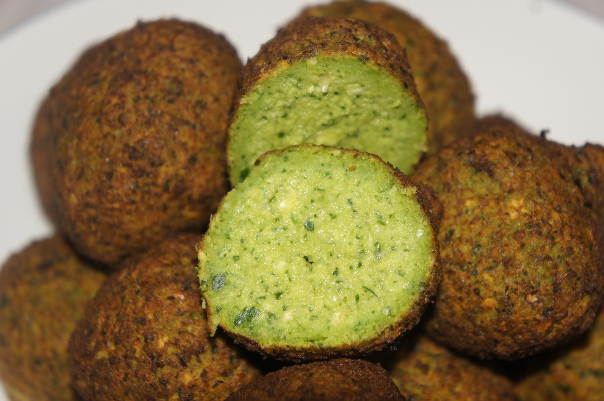

Air Fryed Falafel

While this might not be the most authentic and conventional way to make falafel, I still enjoy it a lot so i feel like sharing it. Enjoy
Shopping List
- Dried Chickpeas (soak overnight) - 200g
- Chopped Onion - 80g
- Chopped Parsley - 60g
- Chopped Cilantro - 15g
- Garlic Cloves - 3
- Green Pepper - 1 small
- Cumin - 1 tsp
- Salt - 1 tsp
- Black Pepper - 1 pinch
- Chickpea Flour - 2 tbsp
- Baking Soda - 0.5 tsp
Steps
- Soak the chickpeas overnight (or for 8 to 12 hours)
- Add all of the ingredients minus the Chickpea Flour and the Baking Soda to a mixer
- Pulse until the mixture feels like coarse sand
- Transfer the mixture to a bowl, add the remaining ingredients, stir, cover and refrigerate for at least 30 minutes
- Shape the falafel. Ideally you should be able to make ~18 balls of the same size
- Bake in the AirFryer for 20 minutes at 180°C - Still check on them periodically to prevent burnings